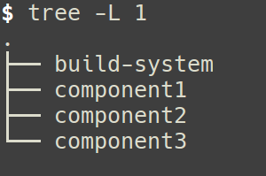

Gradle at SAP
Created by Markus Kohler

Agenda
Introduction
Build tool requirements
Migration
Next steps
Questions?
Introduction
About me
About me
Since October 2017 I'm the Lead Architect for SAP Predictive Maintenance
Before I worked for Successfactors on "developer productivity"
Responsible for development environments
Process and tool improvements
Successfactors
Successfactors
Acquired by SAP in 2011/2012
Global provider of cloud-based human capital management (HCM) software
Suite integrates onboarding, social business and collaboration tools, a learning management system
Performance management, recruiting software, applicant tracking software, succession planning,
Talent management, and HR analytics to deliver business strategy alignment, team execution
Some (rough) numbers
Numbers
40 Million users (2016)
Developed by several hundred developers
More than 100000 source code files
More than 100 repositories a few of them large
New release shipped every 3 months
More than 90% on a JVM stack
Developer productivity team
Small team working on
Development environments
Continuous integration
Tool and process improvements
Ant + Ivy was our build tool
Problems with ant/Ivy
Transitive dependency resolution unusable slow
Unreliable "incremental" builds
Developers run full rebuilds most of the time
I was looking for alternatives (already in 2014)
Build tool requirements
Our requirements
Migration must be non-disruptive
Reuse some ant tasks
Do not change Project layout
Checkout a subset of our components and run a build with one command
Our requirements
SPEED
Low overhead important for some tasks
Change one JavaScript file, build and deploy
Overhead would be up to 50 seconds
Minimize the need for full rebuilds
We need reliable compile avoidance
Compile avoidance,example
Java project A depends on B, which depends on C
If only C changes we do not need to compile A
If a private method in C changes we do not need to compile B and A
Build tools
Build tools
 Bazel, was not yet there
Bazel, was not yet there
Buck,relatively new
Maven, SAPs standard
 Netflix switched to Gradle
Netflix switched to Gradle
Maven or Gradle?
Build tools, Maven
Not much of an improvement over ant
Compile avoidance, no improvement over ant
Rigid build model
See also maven vs gradle
We decided to use Gradle
Convincing management
We've build simple performance monitoring for Ant
Persisted all build times into influxdb
Put Grafana UI on top of it
Estimated a 1 million $ per build minute saved
Migrated a few projects(partially) to gradle, with promising results
Got management buy-in
Migration
Our build layout

Our build layout
build-system contains common build scripts
Most projects have a minimal build script
Compile all projects with one build command
Project ivy.xml use variables for version numbers
ivy-versions.properties in build-system contains the version numbers
Allows us to update versions for shared library centrally
Build complexity, one example
Reverse dependency check
If B and C depend on A
A change to A can break compiling B and C
We have a lot of components, so breaks were very relatively frequent
We implemented the "reverse dependency check"
Reverse dependency check
For each component we have a file in build-system that describes all components depending on the component
During the release of a component these "reverse dependency" files are updated
The reverse dependency check uses byte code analysis to check whether anything would break
An order of magnitude faster then compiling the components
Moving from ant to gradle
Luckily our build was 90% standardized
Mostly implemented by one engineer in a few months
All Jenkins jobs were running with ant and gradle for a while
Pilot with small number of developers
Moving from ant to gradle
Worked almost flawlessly from the beginning
We had quite a bit of build code in Java, which was easy to port
Very good support from gradle engineers
Improvements?
Improvements
Overhead for build after small code change improved 10x
Developers more often run non-clean builds around, 5x faster than old clean build
Large Release builds 2x faster
More reliable build
Developers waste less time
Improvements
The new build-scan feature is fantastic
Reduces support effort
Help us to optimize the build further
Next steps
Next steps
Use gradle parallel build
Use new build cache
Optimize memory usage of gradle daemon
Migrate other projects to gradle
THE END
Questions?
References mentioned
Paul Hammant good source for monorepo information type